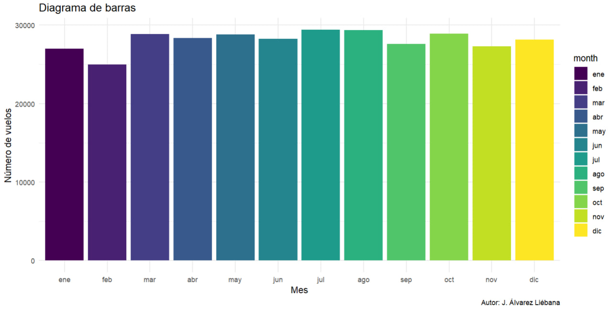
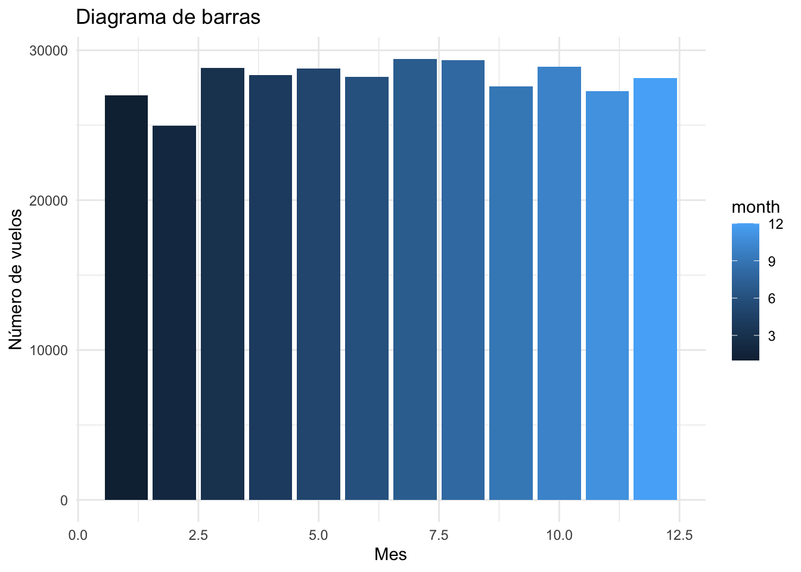
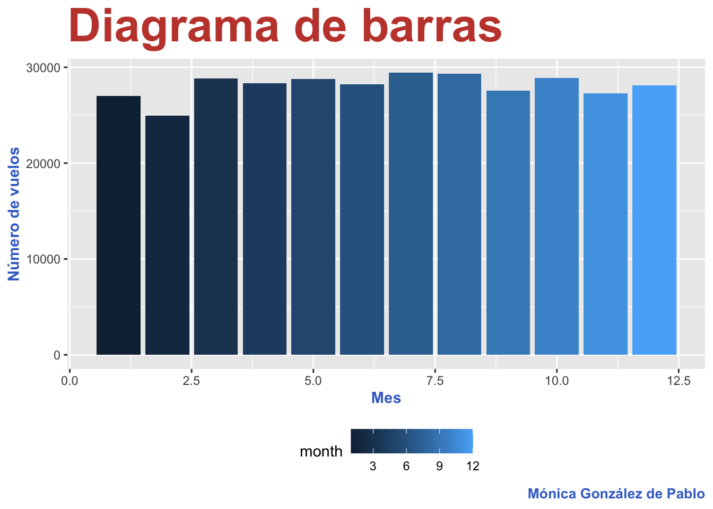
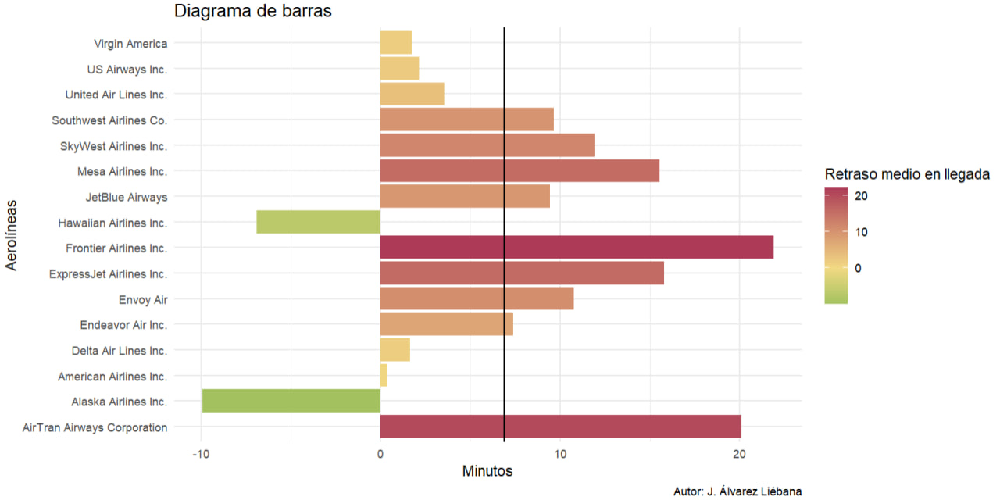
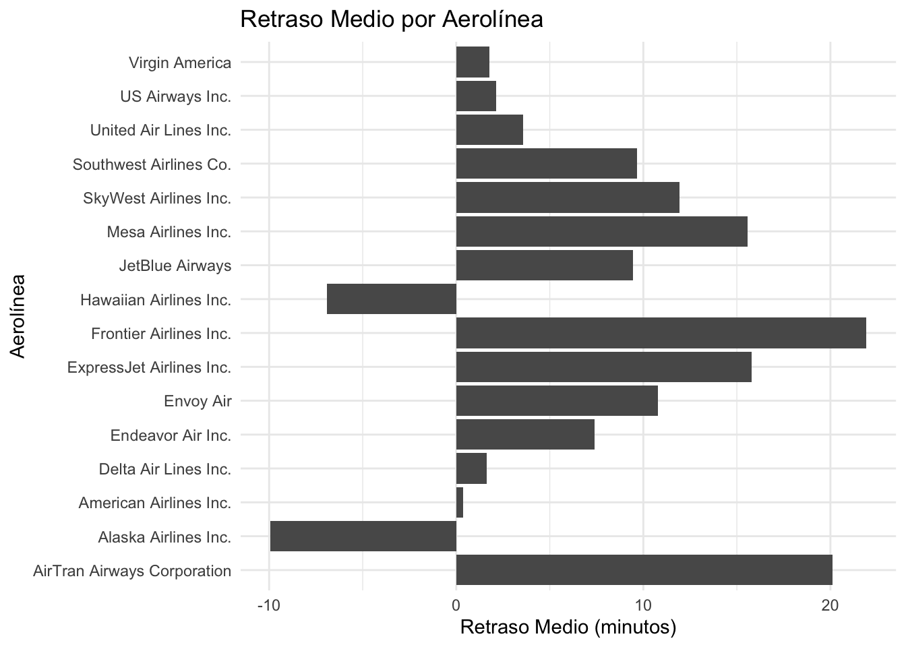
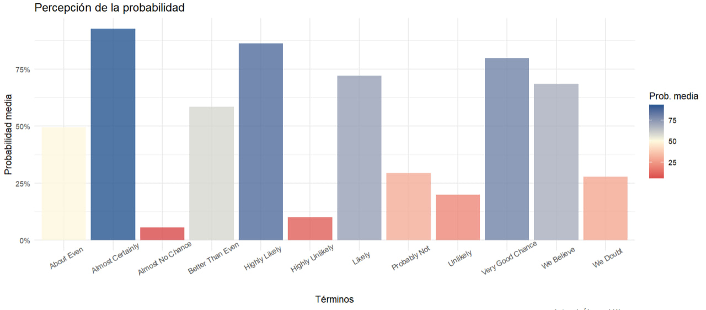
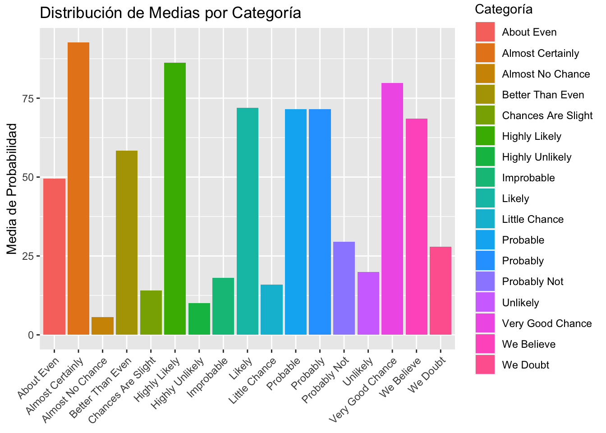
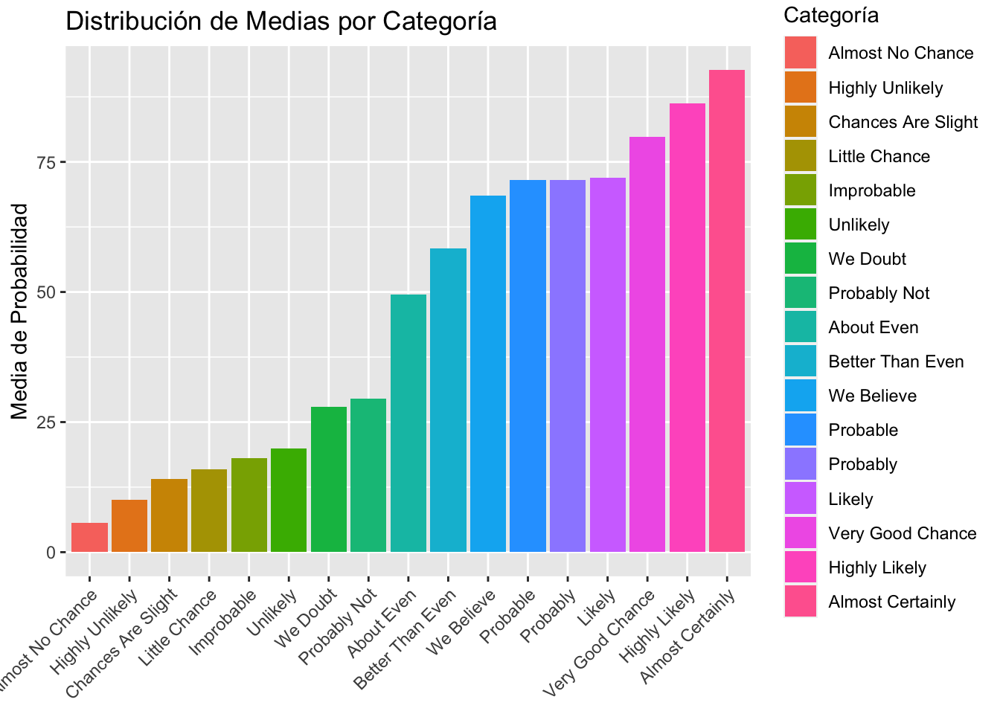
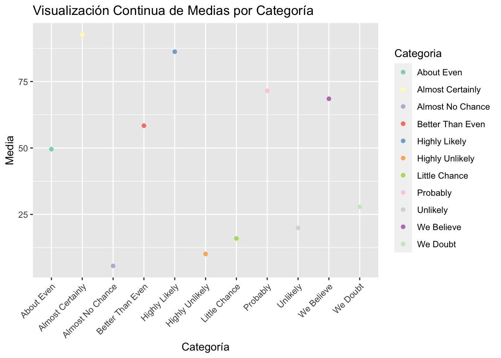

Modifica dentro del documento .qmd tus datos personales (nombre y DNI) ubicados en la cabecera del archivo.
Asegúrate, ANTES de seguir editando el documento, que el archivo .qmd se renderiza correctamente y se genera el .html correspondiente en tu carpeta local de tu ordenador.
Los chunks (cajas de código) creados están o vacíos o incompletos, de ahí que la mayoría tengan la opción #| eval: false. Una vez que edites lo que consideres, debes ir cambiando cada chunck a #| eval: true (o quitarlo directamente) para que se ejecuten.
Recuerda que puedes ejecutar chunk a chunk con el botón play o ejecutar todos los chunk hasta uno dado (con el botón a la izquierda del anterior).
Paquetes necesarios
Necesitaremos los siguientes paquetes (haz play en el chunk para que se carguen):
rm(list =ls()) # Borramos variables de environmentlibrary(glue)library(tidyverse)
── Attaching core tidyverse packages ──────────────────────── tidyverse 2.0.0 ──
✔ dplyr 1.1.4 ✔ readr 2.1.4
✔ forcats 1.0.0 ✔ stringr 1.5.1
✔ ggplot2 3.4.4 ✔ tibble 3.2.1
✔ lubridate 1.9.3 ✔ tidyr 1.3.0
✔ purrr 1.0.2
── Conflicts ────────────────────────────────────────── tidyverse_conflicts() ──
✖ dplyr::filter() masks stats::filter()
✖ dplyr::lag() masks stats::lag()
ℹ Use the conflicted package (<http://conflicted.r-lib.org/>) to force all conflicts to become errors
library(readxl)library(nycflights13)
Caso práctico: aviones
Ejercicio 1
Haciendo uso de los datasets del paquete {nycflights13}, reproduce lo más fielmente posible el siguiente gráfico

library(ggthemes)vuelos <-nycflights13::flightsggplot(vuelos |>count(month)) +geom_col(aes(x=month, y=n, fill = month))+labs(title ="Diagrama de barras",x ="Mes",y ="Número de vuelos")+theme_minimal()

Ejercicio 2
Repite el ejercicio anterior personalizando el tema con al menos los siguientes items:
Una fuente diferente a la por defecto para el título y el caption
Los títulos de los ejes en un color que no sea el negro por defecto
library(sysfonts)ggplot(vuelos |>count(month)) +geom_col(aes(x=month, y=n, fill=month, size = ))+labs(title ="Diagrama de barras",x ="Mes",y ="Número de vuelos", caption ="Mónica González de Pablo")+theme(axis.title.x =element_text(color ="#3E6FCB", face ="bold"),axis.title.y =element_text(color ="#3E6FCB", face ="bold"),plot.title =element_text(color ="#C34539", face ="bold", size =33),plot.caption =element_text(color ="#3E6FCB", face ="bold", size =10),legend.position ="bottom", # Posicionar la leyenda en la parte inferiorlegend.direction ="horizontal")

Ejercicio 3
Haciendo uso de los datasets del paquete {nycflights13}, reproduce lo más fielmente posible el siguiente gráfico, teniendo en cuenta que la línea vertical es la media global (sin desagregar por aerolíneas)

aerolineas <-nycflights13::airlinesaerolineas
# A tibble: 16 × 2
carrier name
<chr> <chr>
1 9E Endeavor Air Inc.
2 AA American Airlines Inc.
3 AS Alaska Airlines Inc.
4 B6 JetBlue Airways
5 DL Delta Air Lines Inc.
6 EV ExpressJet Airlines Inc.
7 F9 Frontier Airlines Inc.
8 FL AirTran Airways Corporation
9 HA Hawaiian Airlines Inc.
10 MQ Envoy Air
11 OO SkyWest Airlines Inc.
12 UA United Air Lines Inc.
13 US US Airways Inc.
14 VX Virgin America
15 WN Southwest Airlines Co.
16 YV Mesa Airlines Inc.
cruce <- aerolineas |>#queremos COMPLETAR la tabla aerolineas con la información de vuelosleft_join(vuelos |>select(carrier, arr_delay), by ="carrier")cruce
# A tibble: 336,776 × 3
carrier name arr_delay
<chr> <chr> <dbl>
1 9E Endeavor Air Inc. 11
2 9E Endeavor Air Inc. -2
3 9E Endeavor Air Inc. -2
4 9E Endeavor Air Inc. -1
5 9E Endeavor Air Inc. -5
6 9E Endeavor Air Inc. -5
7 9E Endeavor Air Inc. 5
8 9E Endeavor Air Inc. 13
9 9E Endeavor Air Inc. -8
10 9E Endeavor Air Inc. -33
# ℹ 336,766 more rows
#| eval: truecruce |>drop_na(name) |>group_by(name) |>summarise(media_retraso =mean(arr_delay, na.rm =TRUE)) |>ggplot(aes((x = name), y = media_retraso)) +geom_col() +stat_summary(fun ="media_global", size =0.4, color ="coral") +#no aparece no se por quélabs(title ="Retraso Medio por Aerolínea",x ="Aerolínea",y ="Retraso Medio (minutos)") +coord_flip() +theme_minimal()
Warning: Computation failed in `stat_summary()`
Caused by error in `get()`:
! object 'media_global' of mode 'function' was not found

Caso práctico: probabilidades
Ejercicio 1
Haciendo uso del dataset de probabilidades intenta replicar lo más fielmente el siguiente gráfico (realiza las transformaciones previas a los datos que consideres)

datos <-read_csv("https://raw.githubusercontent.com/zonination/perceptions/master/probly.csv")
Rows: 46 Columns: 17
── Column specification ────────────────────────────────────────────────────────
Delimiter: ","
dbl (17): Almost Certainly, Highly Likely, Very Good Chance, Probable, Likel...
ℹ Use `spec()` to retrieve the full column specification for this data.
ℹ Specify the column types or set `show_col_types = FALSE` to quiet this message.
datos_tidy <- datos |>pivot_longer(cols =c("Almost Certainly":"Chances Are Slight"), names_to ="probability", values_to ="values")datos_tidy
# A tibble: 782 × 2
probability values
<chr> <dbl>
1 Almost Certainly 95
2 Highly Likely 80
3 Very Good Chance 85
4 Probable 75
5 Likely 66
6 Probably 75
7 We Believe 66
8 Better Than Even 55
9 About Even 50
10 We Doubt 40
# ℹ 772 more rows
# A tibble: 6 × 2
Categoria Media
<chr> <dbl>
1 About Even 49.6
2 Almost Certainly 92.6
3 Almost No Chance 5.63
4 Better Than Even 58.4
5 Chances Are Slight 14.1
6 Highly Likely 86.2
datos_tidy_media
# A tibble: 17 × 2
Categoria Media
<chr> <dbl>
1 About Even 49.6
2 Almost Certainly 92.6
3 Almost No Chance 5.63
4 Better Than Even 58.4
5 Chances Are Slight 14.1
6 Highly Likely 86.2
7 Highly Unlikely 10.1
8 Improbable 18.0
9 Likely 72
10 Little Chance 16.0
11 Probable 71.5
12 Probably 71.5
13 Probably Not 29.5
14 Unlikely 19.9
15 Very Good Chance 79.8
16 We Believe 68.5
17 We Doubt 27.9
ggplot(datos_tidy_media, aes(x = Categoria, y = Media, fill = Categoria)) +geom_bar(stat ="identity") +labs(title ="Distribución de Medias por Categoría",x =NULL,y ="Media de Probabilidad",fill ="Categoría") +theme(axis.text.x =element_text(angle =45, hjust =1))

Ejercicio 2
Repite el gráfico anterior pero ordenando las barras por la probabilidad media (de menos a más). Busca info de fct_reorder (paquete forcats para tratar cualis, incluido en tidyverse)
library(forcats)datos_tidy_media |>mutate(Categoria =fct_reorder(Categoria, Media))|>ggplot(aes(x = Categoria, y = Media, fill = Categoria)) +geom_bar(stat ="identity") +labs(title ="Distribución de Medias por Categoría",x =NULL, y ="Media de Probabilidad", fill ="Categoría") +theme(axis.text.x =element_text(angle =45, hjust =1))

Ejercicio 3
Elimina los términos c(“Chances Are Slight”, “Improbable”, “Probably Not”, “Probable”, “Likely”, “Very Good Chance”). Tras ello, ¿cómo podríamos visualizarlo de manera continua, sin tener que resumirlo (no valen boxplots, ver ejercicio siguiente)? Realiza el gráfico o gráficos que consideres de manera que haya un por término (y mostrados juntos). Decide una paleta adecuada de colores.
Para visualizar un gráfico de forma contínua de estos datos sin tener que resumirlos, lo más adecuado sería hacer un diagrama de dispersión de puntos.
datos_filtrados <- datos_tidy_media |>filter(!Categoria %in%c("Chances Are Slight", "Improbable", "Probably Not", "Probable", "Likely", "Very Good Chance"))ggplot(datos_filtrados, aes(x = Categoria, y = Media, color = Categoria)) +geom_point() +labs(title ="Visualización Continua de Medias por Categoría",x ="Categoría",y ="Media") +theme(axis.text.x =element_text(angle =45, hjust =1)) +scale_color_brewer(palette ="Set3")

Ejercicio 4
¿Qué tipo de gráfico es? ¿Qué parte del código de un gráfico decide que algo sea un diagrama de puntos o un boxplot? Intenta replicarlo
El gráfico de la imagen es un diagrama de cajas y bigotes, que se emplea para la representación de datos atípicos de un conjunto y su dispersión. El tipo de gráfico en ggplot2 se determina principalmente por la función geom que se utiliza. Cada función geom representa un tipo específico de gráfico. Por ejemplo: geom_point() representa un diagrama de puntos, mientras que para un diagrama de cajas y bigotes se usará la función geom_boxplot(). La elección de la función geom y sus parámetros determina la apariencia y el tipo de gráfico que se produce.
ggplot(datos_tidy |>mutate(probability =fct_reorder(probability, values)),aes(x = probability, y = values, fill = probability)) +geom_boxplot() +labs(title ="Boxplot de Medias por Categoría",x ="Categoría",y ="Media") +theme(axis.text.x =element_text(angle =45, hjust =1)) +scale_fill_colorblind() #no hay colores suficientes
Warning: This manual palette can handle a maximum of 8 values. You have
supplied 17.